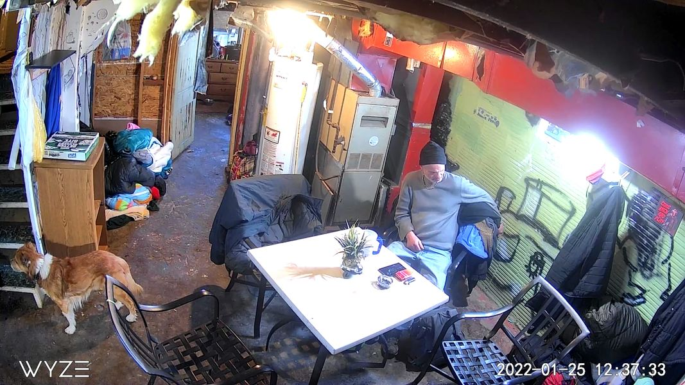

Timeline photos
I LOVE THAT DOG. His mom went upstairs and he's just patiently waiting for her to come back downstairs.
This is the @[112716880296603:274:Houseless Movement] warming center.
I'm having a conversation on Nextdoor about a woman who will not leave her tent to go into a shelter because she refuses to leave her dog.
Your dog, your belongings, your partner are the last threads of connection to society you have as a homeless person. And every single shelter wants you to give them all up for one night in their bed.